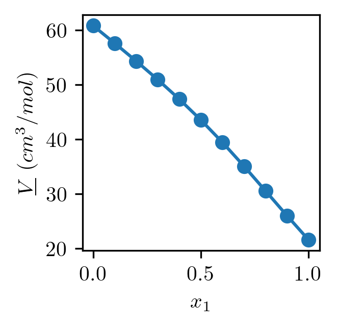
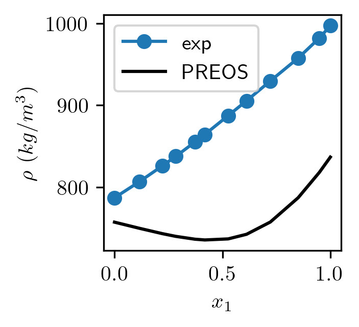
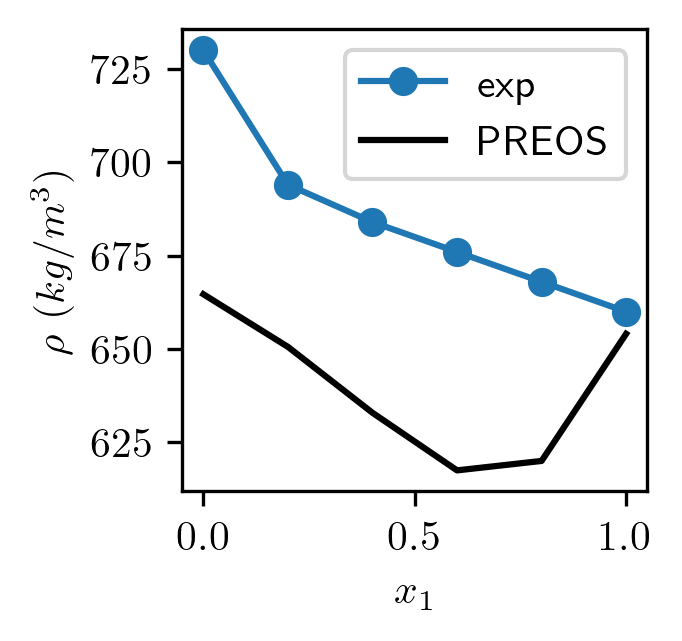

Calculating the Accuracy of Equations of State#
Peng–Robinson Equation of State (PR‑EOS)#
The Peng–Robinson EOS is a cubic equation of state used to model the pressure-volume-temperature (PVT) behavior of pure fluids and mixtures. It is written as:
Where:
\(P\) = pressure
\(T\) = temperature
\(\underline{V}\) = molar volume
\(R\) = gas constant
\(a\) = attractive parameter
\(b\) = co‑volume (repulsive) parameter
Pure‑Component Parameters#
Acentric‑factor‑dependent parameter \(\kappa\)#
This adjusts the temperature dependence of attractive forces based on molecular shape and polarity.
Temperature correction factor \(\alpha(T_r, \omega)\)#
Where:
This term reduces attractive forces as temperature increases.
Attractive parameter \(a\)#
Controls long‑range intermolecular attraction.
Repulsive parameter \(b\)#
Represents excluded volume due to finite molecular size.
Mixing Rules for a Binary Mixture#
For a mixture of components 1 and 2 with mole fractions \(x_1\) and \(x_2\):
Mixture attractive parameter \(a_{\text{mix}}\)#
Where:
\(k_{12}\) = binary interaction parameter
For similar nonpolar molecules (hexane/decane), \(k_{12} \approx 0\)
What this term does:
It blends the attractive forces of the two components and corrects for non‑ideal interactions.
Mixture repulsive parameter \(b_{\text{mix}}\)#
This is a simple linear mixing rule because repulsive forces are short‑range and nearly additive.
3. Compressibility Factor Equation#
The PR EOS can be written as a cubic equation in the compressibility factor \(Z\):
Where:
And the coefficients are:
What this does:
Solving this cubic gives up to three real roots:
smallest root → liquid phase
largest root → vapor phase
4. Molar Volume#
Once a real root \(Z\) is selected:
This gives the molar volume of the mixture.
5. Density of the Mixture#
If the mixture molecular weight is:
Then the density is:
Let’s code these equations up#
import numpy as np
import matplotlib.pyplot as plt
def kappa(w):
return 0.37464+1.54266*w-0.26992*w**2
def alpha(Tr,w):
return (1+kappa(w)*(1-np.sqrt(Tr)))**2
def a(T,Tc,Pc,w):
Tr=T/Tc
return 0.45724*(R*Tc)**2/Pc*alpha(Tr,w)
def b(Tc,Pc):
return 0.07780*R*Tc/(Pc)
def amix(x1):
x2 = (1-x1)
return a1*x1**2+a2*x2**2+x1*x2*np.sqrt(a1*a2)*(1-kij)
def bmix(x1):
x2 = (1-x1)
return b1*x1 + b2*x2
def Zcoeff(T,P,a,b):
A=a*P/(R*T)**2
B=b*P/(R*T)
return [1,
-1+B,
A-3*B**2-2*B,
-A*B+B**2+B**3]
Let’s do an example with Water and Ethanol based on the critical properties given below:#
Compound |
Formula |
MW (g/mol) |
Tc (K) |
Pc (MPa) |
Acentric Factor (ω) |
|---|---|---|---|---|---|
Water |
H₂O |
18.015 |
647.1 |
22.06 |
0.344 |
Ethanol |
C₂H₆O |
46.068 |
514.0 |
6.14 |
0.645 |
T=298 #K
P=101325 #Pa
##water properties
Tc1=647.13 #K
Pc1=220.55 #bar
w1=0.344861
##ethanol properties
Tc2=514 #Tc
Pc2=63.90 #bar
w2=0.643558
R=8.314##j/mol*k
kij=-0.11
a1 = a(T,Tc1,Pc1*10**5,w1)
a2 = a(T,Tc2,Pc2*10**5,w2)
b1 = b(Tc1,Pc1*10**5)
b2 = b(Tc2,Pc2*10**5)
x1 = np.linspace(0,1)
amix_ = amix(x1)
bmix_ = bmix(x1)
print(a1,a2, amix_)
print(b1*10**6, b2*10**6, bmix_*10**6)
0.9849011292292787 2.206916461704518 [2.20691646 2.15088369 2.09614649 2.04270487 1.99055881 1.93970832
1.8901534 1.84189405 1.79493027 1.74926207 1.70488943 1.66181236
1.62003086 1.57954493 1.54035457 1.50245979 1.46586057 1.43055692
1.39654884 1.36383633 1.33241939 1.30229803 1.27347223 1.245942
1.21970734 1.19476825 1.17112473 1.14877679 1.12772441 1.1079676
1.08950636 1.07234069 1.05647059 1.04189606 1.02861711 1.01663372
1.0059459 0.99655365 0.98845697 0.98165586 0.97615033 0.97194036
0.96902596 0.96740713 0.96708387 0.96805618 0.97032406 0.97388752
0.97874654 0.98490113]
18.97903333466334 52.029766635367764 [52.02976664 51.35526187 50.68075711 50.00625235 49.33174759 48.65724283
47.98273807 47.30823331 46.63372855 45.95922378 45.28471902 44.61021426
43.9357095 43.26120474 42.58669998 41.91219522 41.23769046 40.56318569
39.88868093 39.21417617 38.53967141 37.86516665 37.19066189 36.51615713
35.84165237 35.1671476 34.49264284 33.81813808 33.14363332 32.46912856
31.7946238 31.12011904 30.44561428 29.77110951 29.09660475 28.42209999
27.74759523 27.07309047 26.39858571 25.72408095 25.04957619 24.37507142
23.70056666 23.0260619 22.35155714 21.67705238 21.00254762 20.32804286
19.6535381 18.97903333]
plt.figure(dpi=300,figsize=(2,2))
plt.rc('text', usetex=True)
x1_=[0,0.1,0.2,0.3,0.4,0.5,0.6,0.70,0.80,0.90,1]
V_=[]
for x1 in x1_:
roots=np.roots(Zcoeff(T,P,amix(x1),bmix(x1)))
V_.append(np.min(np.real(roots[np.isreal(roots) & (np.real(roots) > 0)])) * R * 298 / 1e5)
plt.plot(x1_,np.asarray(V_)*10**6,marker='o')
plt.xlabel(r'$x_1$')
plt.ylabel(r'$\underline{V}$ $(cm^3/mol)$')
plt.show()

MW1=18 #g/mol
MW2=46.07 #g/mol
x1_exp=np.asarray([0,0.1162,0.2221,0.2841,0.3729,0.4186,0.5266,0.6119,0.7220,0.8509,0.9489,1.0])
rho_exp=np.asarray([786.846,806.655,825.959,837.504,855.031,864.245,887.222,905.376,929.537,957.522,981.906,997.047]) #kg/m^3
rho_mod=[]
for x1 in x1_exp:
x2 = 1-x1
MW = x1*MW1+x2*MW2
roots = np.roots(Zcoeff(T,P,amix(x1),bmix(x1)))
V = np.min(np.real(roots[np.isreal(roots) & (np.real(roots) > 0)])) * R * 298 / 1e5
rho_mod.append(MW/V/10**6)
plt.figure(figsize=(2,2), dpi = 300)
plt.plot(x1_exp, rho_exp, marker='o', label = 'exp')
plt.plot(x1_exp, np.asarray(rho_mod)*1000,'-k', label = 'PREOS')
plt.xlabel(r'$x_1$')
plt.ylabel(r'$\rho$ $(kg/m^3)$')
plt.legend()
plt.show()

Now Let’s do the same for n-Hexane and and n-decane#
Compound |
Formula |
MW (g/mol) |
Tc (K) |
Pc (MPa) |
Acentric Factor (ω) |
|---|---|---|---|---|---|
n‑Hexane |
C₆H₁₄ |
86.178 |
507.6 |
3.03 |
0.301 |
n‑Decane |
C₁₀H₂₂ |
142.286 |
617.7 |
2.11 |
0.488 |
T=298 #K
P=101325 #Pa
##hexane
Tc1=507.6 #K
Pc1=30.3 #bar
w1=0.301
##decane
Tc2 = 617.7 #Tc
Pc2 = 21.1 #bar
w2 = 0.488
R = 8.314##j/mol*k
kij = 0
a1 = a(T,Tc1,Pc1*10**5,w1)
a2 = a(T,Tc2,Pc2*10**5,w2)
b1 = b(Tc1,Pc1*10**5)
b2 = b(Tc2,Pc2*10**5)
print(a1,a2)
print(b1*10**5,b2*10**5)
x1=np.linspace(0,1)
amix_=amix(x1)
bmix_=bmix(x1)
MW1 = 86.178 #g/mol
MW2 = 142.286 #g/mol
# Mole fraction of hexane (x_hexane)
x1_exp = np.array([1.0, 0.8, 0.6, 0.4, 0.2, 0.0])
# Experimental-density-inspired values at 298 K (g/mL)
# Representative of Tripathi (2005) and Regueira et al. (2015)
rho_exp = np.array([0.660, 0.668, 0.676, 0.684, 0.694, 0.730])*1000 #kg/m^3
rho_mod=[]
for x1 in x1_exp:
x2 = 1 - x1
MW = x1*MW1 + x2*MW2
roots = np.roots(Zcoeff(T, P, amix(x1), bmix(x1)))
V = np.min(np.real(roots[np.isreal(roots) & (np.real(roots) > 0)])) * R * 298 / 1e5
rho_mod.append(MW/V/10**6)
plt.figure(figsize=(2,2), dpi = 300)
plt.plot(x1_exp, rho_exp, marker='o', label = 'exp')
plt.plot(x1_exp, np.asarray(rho_mod)*1000,'-k', label = 'PREOS')
plt.xlabel(r'$x_1$')
plt.ylabel(r'$\rho$ $(kg/m^3)$')
plt.legend()
plt.show()
3.8086546820691596 10.029650127827047
10.835990162376238 18.935848191469194

Why the Peng–Robinson EOS Performs Better for Alkanes Than for Polar Solvents#
The Peng–Robinson equation of state was originally developed and parameterized for nonpolar and mildly polar hydrocarbons, and its mathematical structure reflects that heritage. Alkanes like hexane and decane interact primarily through London dispersion forces, which are smooth, isotropic, and well‑approximated by the simple attractive term in PR:
Because these interactions vary predictably with temperature and molecular size, the PR functional form captures their behavior with impressive accuracy. The acentric factor \(\omega\) provides just enough flexibility to tune the temperature dependence of attraction without introducing strong directional effects.
Polar solvents behave very differently. Water and ethanol exhibit:
Strong, highly directional hydrogen bonding
Large dipole moments
Associative clustering in the liquid phase
Abrupt structural changes with temperature
These effects are not represented in the PR EOS. The attractive term assumes a spherically symmetric, van der Waals‑like interaction, which cannot reproduce the steep density–temperature behavior, anomalous compressibility, or strong non‑ideal mixing seen in polar fluids. As a result, PR systematically underpredicts liquid densities, misrepresents vapor pressures, and struggles with phase equilibria for associating solvents.
In short, PR works beautifully for alkanes because their intermolecular physics matches the assumptions built into the model, while polar solvents violate those assumptions in fundamental ways. This is why extensions like CPA‑EOS, SAFT, or PR‑CPA are preferred for hydrogen‑bonding systems, whereas PR remains a workhorse for hydrocarbon thermodynamics.
import teqp
import numpy as np
import pandas
import matplotlib.pyplot as plt
teqp.__version__
---------------------------------------------------------------------------
ModuleNotFoundError Traceback (most recent call last)
Cell In[7], line 1
----> 1 import teqp
2 import numpy as np
3 import pandas
ModuleNotFoundError: No module named 'teqp'
pip install